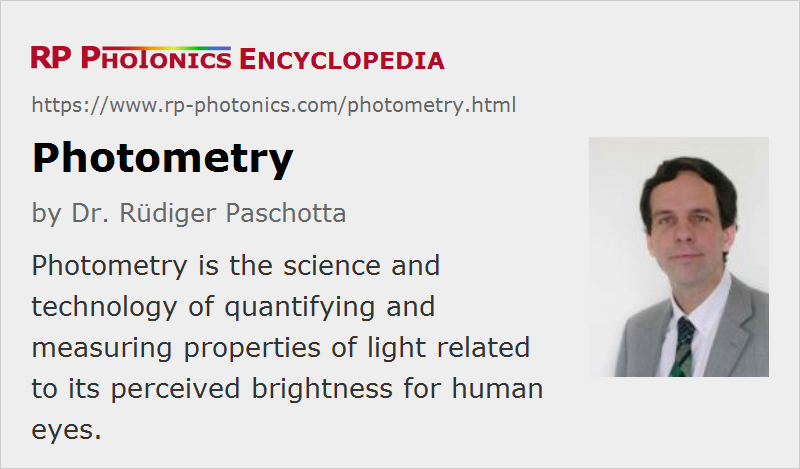

Photometry
Definition: the science and technology of measuring properties of light related to its perceived brightness for human eyes
More general term: optical metrology
German: Photometrie
Categories: general optics, light detection and characterization
How to cite the article; suggest additional literature
Author: Dr. Rüdiger Paschotta
Photometry is the science and technology of quantifying and measuring properties of light related to its perceived brightness for human eyes. It thus deals with visible light only, not with infrared and ultraviolet light, and takes into account the spectral sensitivity of the human eye.
Note that the term brightness should be used only as a qualitative indication for perceived brightness, not as a measurable quantity (although it is often used instead of radiance or luminance).
Wavelength-dependent Sensitivity of the Human Eye
The wavelength-dependent sensitivity of the human eye plays an essential role in photometry. Many photometric quantities are obtained by multiplying or integrating a radiometric quantity with a weighting factor (luminosity function). Here, one needs to distinguish between two different situations:
- When the human eye receives sufficiently intense light from illuminated objects (with at least a couple of cd/m2), it essentially uses its cone cells, which allow for color perception (photopic vision). The eye has three different kinds of such cones (S, M and L) with different spectral sensitivities. For estimating the overall perceived brightness, one can use the CIE photopic luminosity function y(λ) (or V(λ)):

- Under faint illumination conditions, the human eye uses the substantially more sensitive rod cells (scotopic vision). There is only one kind of those rods, and as a result one cannot perceive colors with them. The resulting visual impression is gray. The perceived brightness can be estimated with the CIE scotopic luminosity function:

Note that the peak scotopic response is at somewhat shorter wavelengths, and light with wavelength from ≈640 nm on is hardly visible at all with the rods.
The luminous flux, which is generated in a light source, for example, can be calculated using the photopic luminosity function (i.e., assuming sufficiently highlight intensities) and the spectral radiant flux:
The constant value of ≈683 lm/W indicates that for the peak wavelength of ≈555 nm (in the green region), where the photopic luminosity function is 1, one obtains ≈683 lumen per watt of optical power. The luminous efficacy of 683 lm/W would be that of a light source which could completely convert electrical energy into light at 555 nm. Real light sources stay well below that limiting value; for example, white light emitting diodes (LEDs) are normally between 150 lm/W and 200 lm/W; the theoretical limit is around 300 lm/W for white light, which necessarily contains a red and blue light, for which the eye is less sensitive.
Both mentioned luminosity functions apply to the typical healthy human eye. In practice, there are certain variations, e.g. a reduction in sensitivity mostly on the short-wavelength part due to aging lenses. Some individuals exhibit substantial deviations from the norm, for example in the form of color blindness. For them, the standard luminosity functions are not applicable.
Photometric Quantities
There is a wide range of photometric quantities, most of which are directly related to radiometric quantities:
| Quantity | Symbol | Units | Remarks | Related radiometric quantity |
|---|---|---|---|---|
| luminous energy | Qv | lumen second (lm s) | quantifying the visual impression of a light pulse, for example | radiant energy |
| luminous flux | Φv | lumen (lm) | luminous energy per unit time, e.g. emitted by a light source | radiant flux |
| luminous intensity | Iv | candela (cd = lm/sr) | luminous flux per unit solid angle | radiant intensity |
| luminance | Lv | candela per square meter (cd/m2 = lm sr−1 m−2) | luminous flux per unit solid angle and unit projected area | radiance |
| illuminance | Ev | lux (lx) (= lm/m2) | luminous flux incident on a surface, e.g. an office desk | irradiance |
| luminous exitance | Mv | lux (lx) (= lm/m2) | luminous flux emitted from a surface | radiant exitance |
| luminous exposure | Hv | lux second (lx s) | time-integrated illuminance | radiant exposure |
| luminous efficacy | η | lumen per watt (lm/W) | luminous flux per watt of optical power or per watt of consumed electrical power of a lamp | |
| luminous efficiency | V | luminous efficacy relative to its maximum possible value for a given optical spectrum |
The subscript “v” of many of those quantities indicates that they refer to vision rather than to physical energies (“e”) as in radiometry.
Some of those terms are frequently confused. For example, luminous efficiency is often used instead of luminous efficacy; this can often easily be recognized from the used units.
There are also various spectral quantities in photometry, which describe a distribution of some quantity over optical frequencies or wavelengths. For example, the spectral luminous flux is the luminous flux per unit optical frequency or wavelength.
Measurement of Photometric Quantities
For the measurement of photometric quantities, there are various kinds of photometers. In particular, there are instruments for measuring the illuminance and for the total luminous flux. Further derived quantities can often be calculated from measured illuminance values, for example.
Questions and Comments from Users
Here you can submit questions and comments. As far as they get accepted by the author, they will appear above this paragraph together with the author’s answer. The author will decide on acceptance based on certain criteria. Essentially, the issue must be of sufficiently broad interest.
Please do not enter personal data here; we would otherwise delete it soon. (See also our privacy declaration.) If you wish to receive personal feedback or consultancy from the author, please contact him e.g. via e-mail.
By submitting the information, you give your consent to the potential publication of your inputs on our website according to our rules. (If you later retract your consent, we will delete those inputs.) As your inputs are first reviewed by the author, they may be published with some delay.
See also: radiometry, photometers, luminous flux, luminance, luminous efficacy and efficiency, luminosity functions, illuminance
and other articles in the categories general optics, light detection and characterization
|  |
If you like this page, please share the link with your friends and colleagues, e.g. via social media:
These sharing buttons are implemented in a privacy-friendly way!